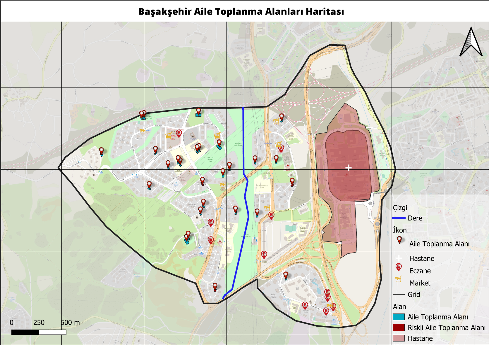
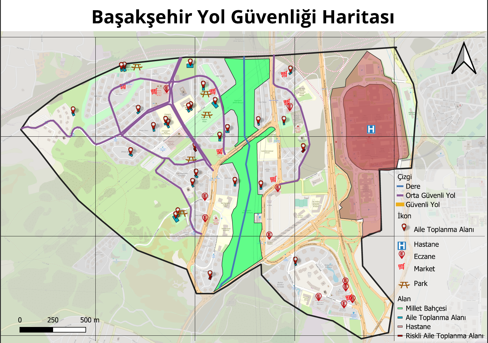
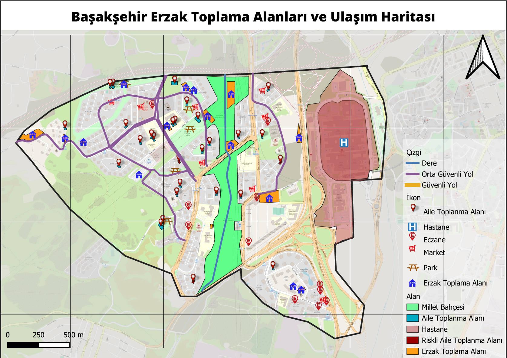

1. Senaryo:Bu senaryo, deprem sonrasında ev halkının birbirini bulabilmesi için konumlarına en yakın güvenli toplanma alanları tespit edilerek tasarlanmıştır.
2. Senaryo:Bu senaryo, deprem sonrasında ev halkının birbirini bulabilmesi için konumlarına en yakın güvenli toplanma alanları tespit edilerek tasarlanmıştır.
1. Senaryo:Bu senaryo, deprem sonrasında ev halkının birbirini bulabilmesi için konumlarına en yakın güvenli toplanma alanları tespit edilerek tasarlanmıştır.
